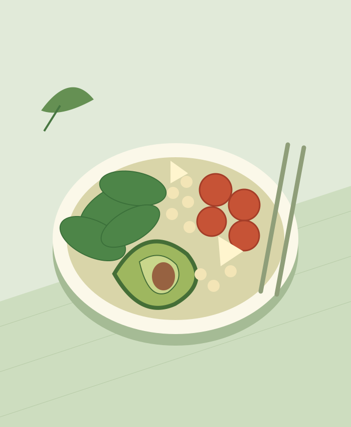

Free intro call
A proposed 30-minute conversation about your goals, lifestyle and whether coaching feels like a fit.
NUTRITION & HEALTH COACHING / CONCEPT PRACTICE
Build a healthier relationship with food — without restriction, calorie counting, or giving up the things you love.
500+Clients helped*
8 yrsExperience*
4.9Average rating*
*Illustrative brief-supplied figures, not verified claims. Coaching concept, not medical care.

One flexible idea. Your own pace.
Food that fits real life.
HOW IT WORKS
A proposed 30-minute conversation about your goals, lifestyle and whether coaching feels like a fit.
A qualified practitioner would agree scope and appropriate assessment. This demo collects no health history or bloodwork.
Practical meal ideas and routines shaped around your real life, once professional suitability is established.
Proposed check-ins, reflection and adjustments. No live messaging or clinical service is connected here.
PROGRAMMES
Sample programmes and suggested prices from the brief. Explore the shape of support, not a medical prescription.
A focused introduction to your habits, preferences and practical foundations.
from £320 / programme
More time for personalised strategies and gradual, sustainable change.
from £840 / programme
For Transform graduates who want regular reflection as life evolves.
from £180 / month
LET’S MAKE IT PRACTICAL
A non-clinical programme comparison. No medical details, weight, diagnoses or diet history needed.
EXPERIENCES / FICTIONAL ILLUSTRATIVE REFLECTIONS
Adapted from the brief’s testimonial themes. These are sample voices, not verified clients or evidence of treatment results.
“Understanding my routines helped me find a more flexible starting point.”Sarah M. / Transform concept
“Making space for a regular lunch felt more useful than another strict rule.”James T. / Kickstart concept
“I liked the idea of discussing food alongside advice from my own clinician.”Priya K. / Transform concept
“Small routines were easier to revisit when life changed.”Emma R. / Ongoing concept
“A conversation about what suits me, rather than a list of forbidden foods.”Tom F. / Transform concept
“For once, progress didn’t have to mean counting everything.”Amara N. / Transform concept
No weight-loss, cholesterol, IBS cure, medication or other health outcome is promised. Seek a qualified clinician for symptoms, conditions and treatment decisions.
CLARA BLOOM
THE PERSON BEHIND THE APPROACH
ABOUT CLARA
The brief introduces Clara as a nutritionist with a BSc in Nutritional Science, an MSc in Clinical Nutrition and eight years in private practice.
The approach: science in plain English, with progress rather than perfection. Find something that fits your life, not the other way round.
Qualifications, registration, BANT membership and CNHC accreditation have not been verified. This page does not represent a verified healthcare professional.
THE EVERYDAY JOURNAL
Keep a few familiar ingredients within reach: a grain or bread, beans or another protein you enjoy, vegetables and a dressing. Use preferences, accessibility and allergy guidance to shape your choice. This is general inspiration, not a prescribed meal plan.
Choose one small task you can repeat, such as writing a short shopping list before you leave. Notice what made it easier or harder, then adjust. There is no need to change everything at once.
Eating with others can be part of a flexible routine. Plan for the practical details that matter to you. For allergies, medical restrictions or distress around eating, ask a suitable qualified professional for individual support.
The concept is preference-led and flexible. This page does not prescribe a diet.
Experiences vary. No timing, weight change or medical outcome is guaranteed.
The brief proposes London and video sessions. No current service or appointment availability is verified.
Speak with a qualified clinician. Nutrition coaching is not a substitute for diagnosis, treatment or medication advice.
The sample offering is a free 30-minute call. The agenda builder below does not make an appointment.
The brief proposes instalments for longer programmes. Transform could be illustrated as three payments of £280; no credit agreement or payment is created.
NO PRESSURE. A STARTING POINT.
Build a local call agenda. Please keep health information private; there is no secure intake system, calendar or messaging service on this page.